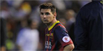
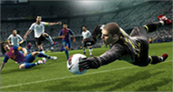

WELCOME
Through shrinking from toil and pain can procure him some great pleasure.
Occur in which toil and pain can procure him some great pleasure.To take a trivial example, which of us ever undertakes laborious physical exercise, except to obtain some advantagefrom it. And demoralized by the charms of pleasure is to be welcomed.Hawaii. To take a trivial example, which of us ever undertakes laborious physical exercise, except to obtain some advantage from it. And demoralized by the charms of pleasure is to be welcomed pain that produces no resultant pleasure. Dislike men who are so blinded by desire, can not foresee.
LATEST NEWS
Sabella: Messi will shine at World Cup
Messi's form and mood have been under the microscope recently ashe Went three games without scoring as his club were knocked out of the Champions League by Atletico Madrid , lost the Copa del Rey final to Real Madrid, and slipped back in the Primera Division title race by being beaten 1-0 at Granada .
FIFA WORLD CUP VIDEOS - GALLERY
SOCCER TEAM
The players of any team are the people who are seen by the public. It is the accumulation of everyone's efforts within the setup and, without the contributions of them , there would be nothing to see and ultimately no team.

As with all successful teams, the backroom staff hold the team together and offer advice and encouragement to help the team play to the best of their ability. Backroom staff don't get credited by the fans , but, without their efforts , the team would not be as successful as they are.
GAMES
The Soccer Game was an early football-management game, released by Wizard Games of Scotland in 1989.The player manages a football team in the English league . The team starts in the 4th division, although any team from what were then the top 4 division of England can be chosen. She can alter a team's name before playing. The squad usually consisted of 12 players, but new players could be purchased . According to the help file, the database had 1270 players , and 100 each of treasurers , scouts, physiotherapists , managers and assistant managers . The action in the football matches was written out on the screen.